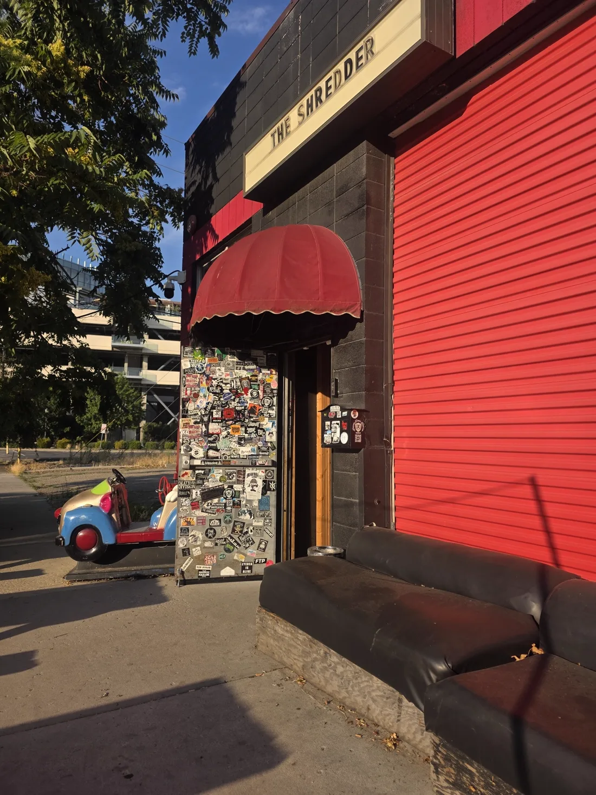
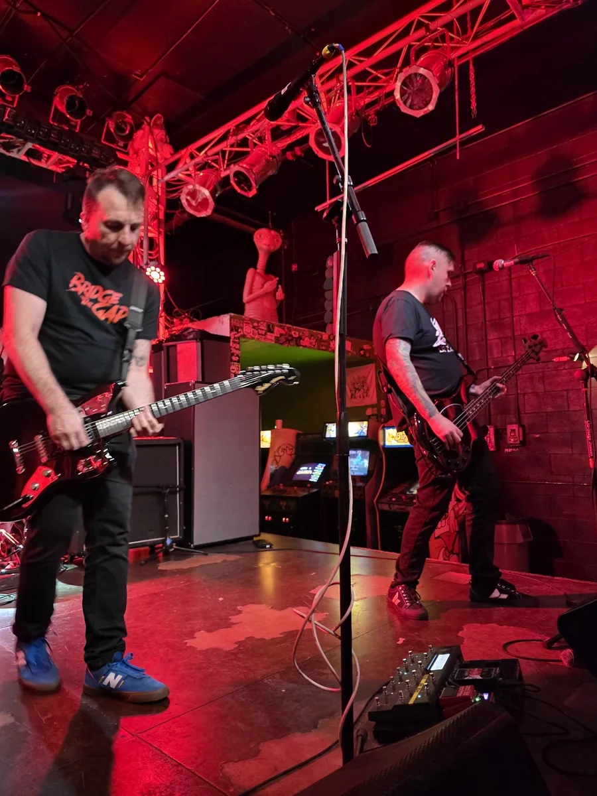
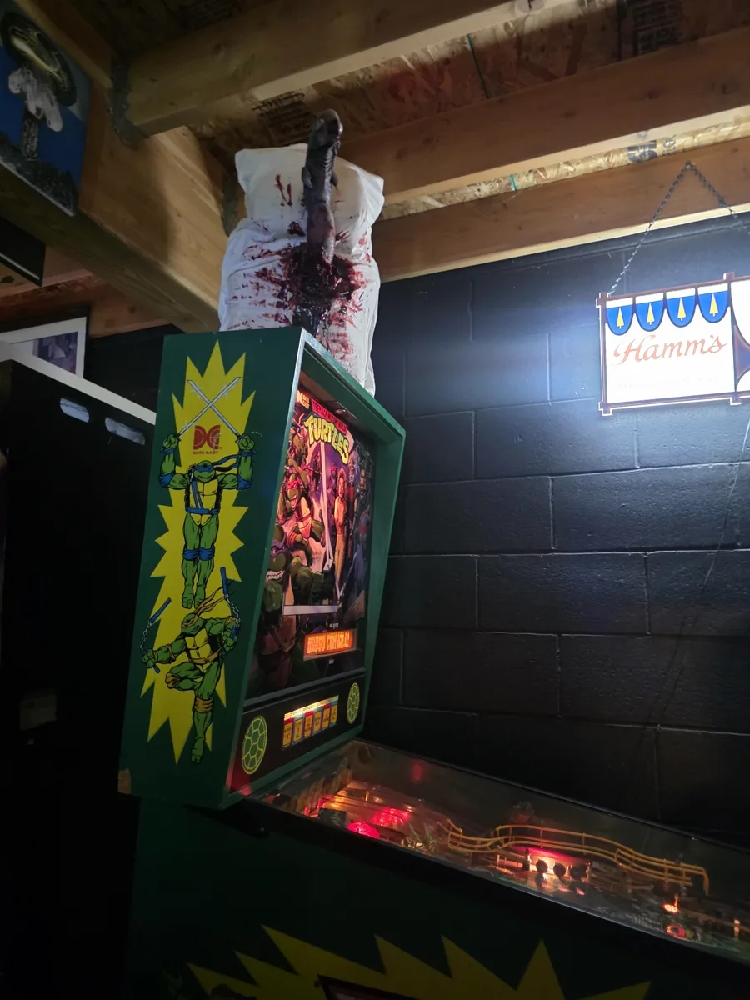
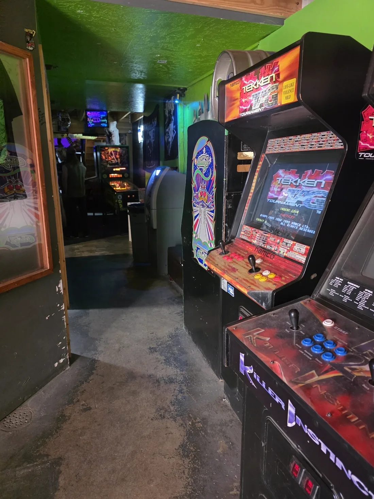
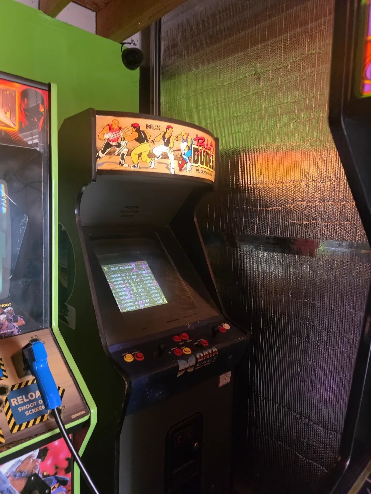
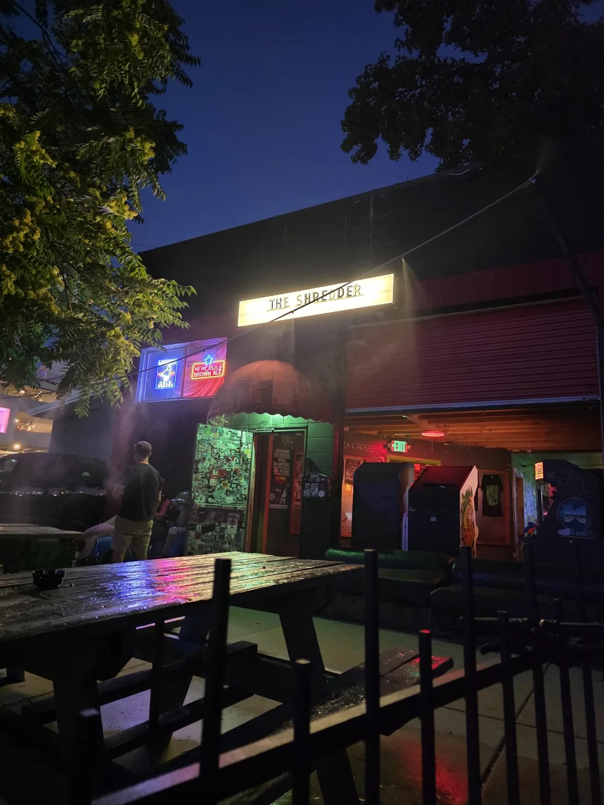

A Very Scary Krunkmas
BrokeNCYDE · Dot Dot Curve · Auntie Boy · A War in Me · ReaperDa Skid · Laurance · IZ & the Friendship Gang
- Doors
- TBA
- Show
- TBA
- Ages
- All Ages

Downtown Boise, Idaho
The Shredder has been a fixture in Boise's underground music scene for well over a decade. Located downtown on 10th Street, it's an independent, roughly 300-capacity venue where local bands share the stage with touring artists from all over.
Punk, hardcore, and metal are a big part of its history, but there's plenty more on the calendar. Indie rock, alternative, experimental music, and bands that don't fit neatly into any one category all find their way through here.
It's a small enough room to get right up front, loud enough to make earplugs a good idea, and the kind of place where you might discover your next favorite band opening for somebody you already love.
Get Directions (opens in a new tab)

There's a lot more to The Shredder than the stage.
Pool, old-school arcade games, pinball, a photo booth, and walls covered in posters, artwork, and assorted oddities give you plenty to explore before the music starts. Upstairs, there's additional seating and more of the collection of things that have accumulated around the venue over the years.
There's also a bar serving beer and a variety of alcoholic and nonalcoholic drinks.
The main music room is primarily standing-room, with the stage close to the crowd. Depending on the show, you might find a packed floor and an active pit, or a smaller audience watching a band that's just passing through town.
There's room to hang back if that's more your speed, too.





The Shredder has outdoor patio space for taking a break between sets, catching up with friends, or escaping the volume for a bit.
And yes, there's a half-pipe.
The skate influence isn't just in the name. It's been part of The Shredder's character for years, right alongside the arcade games, band posters, and everything else that makes the building recognizable to people who've spent time there.
The Shredder has hosted live music dating back to at least 2010, and over the years it's become a regular stop for touring punk, hardcore, metal, and independent artists.
It's also a place where Boise bands get to play alongside artists from outside the Treasure Valley. Some are established local favorites. Others are still finding their audience.
Beyond regular concerts, The Shredder has participated in Treefort Music Fest and hosted community events like the Boise Punk Flea Market, bringing local artists, vendors, and music fans together under one roof.
For a venue its size, a lot has happened here. And there's always another show on the calendar.
There's always something coming through The Shredder. Check out the upcoming lineup, listen to the bands, and find your next show.
BrokeNCYDE · Dot Dot Curve · Auntie Boy · A War in Me · ReaperDa Skid · Laurance · IZ & the Friendship Gang
with Softly · HummusVacuum · MooseCreek Park
So Down! · Far From Giants · Chris Raney · DJ JSIN